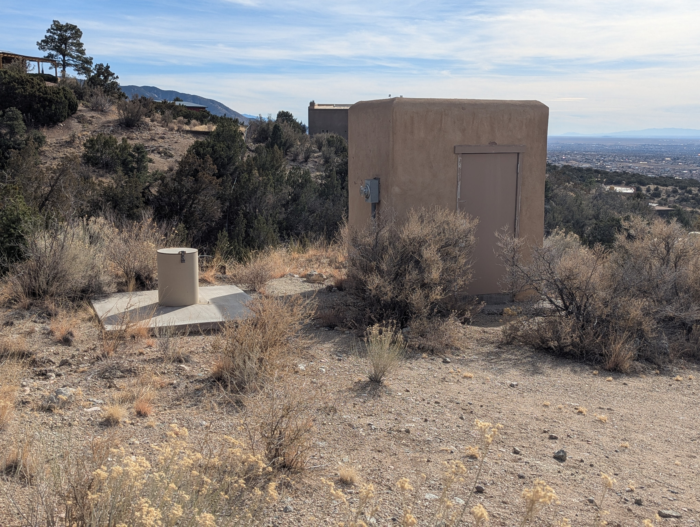
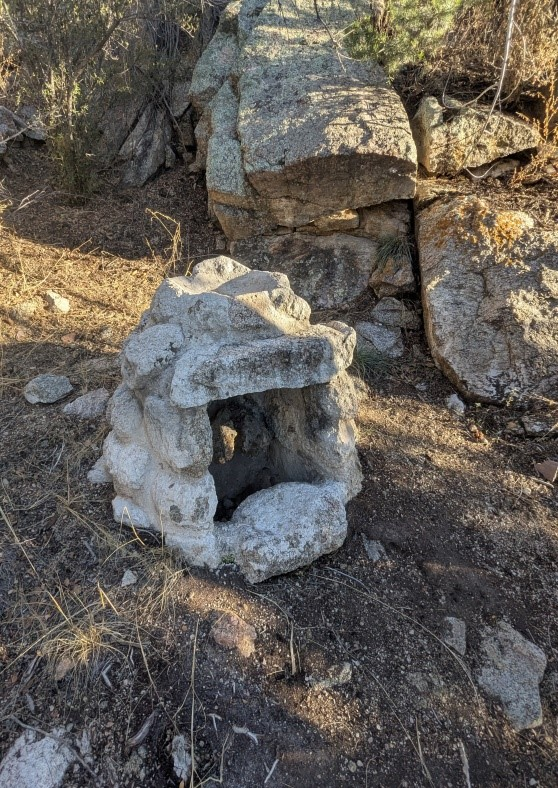

In and About Tierra Monte
Introduction
Tierra Monte and Valley View Acres are small communities nestled in the foothills of Juan Tabo Canyon.
The purpose of this website is to preserve information regarding the development
of this area, as well as, the history of the area.
Location
Tierra Monte and Valley View Acres are located east of the intersection of Tramway and Forest Road 333. To drive to Tierra Monte and Valley View Acres turn on Forest Road 333 off of Tramway, travel approximately 1 mile, and then take a right on Tierra Monte Dr. The community is north of the Tram which opened for operation on May 7, 1966. Note in the 1960s Tramway was still a two lane dirt road.
Plat
The below plat map encompasses Tierra Monte and Valley View Acres. It should be noted that this area was primarily derived from two homesteads that existed in the early 1900s. The homesteads are discussed in more detail under the "History-Homesteads" tab. Looking at the homestead plats under this tab you can see the current plat boundaries follow the two homestead plats. Eight markers would define the two homestead boundaries and these are discussed in detail under the "History-Homestead Markers" tab.
History of Area
Treaty of Guadalupe Hidalgo
The United States acquired the territory that is now the State of New Mexico through the Treaty of Guadalupe Hidalgo on February 2, 1848, ending the war with Mexico. This treaty recognized the Spanish Land Grants previously in place. It was not until 1912 that New Mexico became a state.
Original Land Homesteads in Tierra Monte
The act of Congress May 20, 1862, “To Secure Homesteads to Actual Settlers on the Public Domain” was the
basis of two patents related to claims that make up Tierra Monte. To make a claim, homesteaders paid a filing
fee of $18: a $10 fee to make a temporary claim on the land, $2 for commission to the land agent and an additional
$6 final payment to receive an official patent on the land. Land titles could also be purchased from the government
for $1.25 per acre following six months of proven residency. Additional requirements included five years of
continuous residence on the land, building a home on it, farming the land and making improvements. A homesteader
was eligible for up to 160 acres.
The two claims that makeup the Tierra Monte area were established and consisted of H.E. Survey No. 276
to Soloman Chavez and H.E. Survey No. 275 to Juan Chavez with a total acreage of only 79.5 acres.
These were recorded under Patent Numbers 848125 and 773918, respectively. They were signed by Presidents
Warren G Harding on 2/19/1922 and Woodrow Wilson 9/20/1920, respectively. They were both filed for record on
10/27/1949. Both embraced a portion of, approximately, Section 2 Township 11 north of Range 4 east of
the New Mexico Meridian. It is assumed that the two Chavez's with the adjacent homesteads were related.
The surveyor listed their addresses as Alameda, New Mexico and noted that Alameda was 7 miles away. One
unanswered question is why did these homesteaders not claim more land? Did they purchase the land titles
at $1.25 per acre so the cost was a limiting factor?
Detailed information from surveyor, C. A. Long, who in 1916 surveyed the homesteads in Section 2 Township 11
north of Range 4 east of the New Mexico Meridian, can be found under Surveys in website,
https://glorecords.blm.gov/search/default.aspx#searchTabIndex=0&searchByTypeIndex=0.
The homestead plat maps, included below are obtained from this website.
Soloman Chavez's Plat No. 276
Juan Chavez's Plat No. 275

Homestead Notes and Homesteads Outside of Tierra Monte
The surveyor notes on homesteads 275 and 276 states that each site had an adobe house, a rock wagon shed, and a pole corral for goats. The location of these structures is indicated on each plat. Per the surveyor each site was suitable for raising around 100 goats. Springs supplied water for both the household and the livestock. It is of interest to note that the surveyor in 1916 estimated the land improvements: the house, wagon shed, and corral, to be $200 for each homestead. The picture below is believed to be the remains of the rock wagon shed for homestead 275.
In addition, the surveyor notes that there is no U.S.L.M. available with the prescribed limits, so the surveyor establishes U.S.L.M. No. 1 Sandia on a rocky ridge bearing East and West. This is established on a granite rock 20 feet in diameter and 10 feet high. Detailed information about this reference point is given under the surveyor notes for claim 268. Claims 268, 270, 275, and 276 all reference a direction and distance from U.S.L.M. No. 1. The rock pictured below pointed to by the arrow is believed to be the reference rock the surveyor used.
Around the same time homestead claims 275 and 276 were being surveyed homestead claim 270 in Section 11
Township 11 north of Range 4 east of the New Mexico Meridian was also surveyed by the same surveyor,
C.A. Long. Cosme Garcia's claim, claim 270 is now the northern section of Sandia Heights north.
Cosme Garcia's Plat No. 270
Understanding the Homestead Surveys
Township surveys were introduced after 1782 and in New Mexico Township surveying began in 1855 when the
New Mexico Principal Meridian was adopted. Plat maps from survey numbers 275 and 276 show dimensions in chains
(Gunter's chain). One chain is 66 feet long consisting of 100 links and each link in the chain is 7.92 inches.
A township is 6 miles on each side and divided into 36 sections each being 1 mile by 1 mile. Claim numbers 275
and 276 fall under Township 11 section 2. Township sections are numbered as follows:
6 5 4 3 2 1 7 8 9 10 11 12 18 17 16 15 14 13 19 20 21 22 23 24 30 29 28 27 26 25 31 32 33 34 35 36
North of the La Cueva Picnic Grounds road there is a marker that specifies the boundaries of Township 11 sections 2,3,10, and 11.
This marker pictured below is located at latitude 35° 12' 10.8"N, longitude 106° 28' 52.8W (35.203, -106.498).
The marker from the road can be seen as follows:
Differences between Latitude and Longitudes
In the 1916 survey the surveyor went off of the Reconnaissance Map of San Pedro Quadrangle map.
This map in 1916 most likely used the Clarke 1866 spheroid representation of earth. Current GPS coordinates
used by google photo uses a WGS84 datum. Because of the difference in datums the surveyor documented
latitude and longitudes did not match the latitude and longitudes associated with the google photos
of the markers.
Example of the difference is seen in the surveyor notes regarding the starting latitude and longitude
for Corner 1 in claim 276 versus the google photo of the same corner. The surveyor documents has
latitude 35° 11' 25" N and the longitude 106° 29' 06" W. Google photos has the latitude at 35° 12' 25.2" N
and longitude at 106° 28' 51.6" W. Note: one minute of latitude is equal to 1.15 miles and one second of
longitude is 80 feet. That meant to determine where the markers were via GPS, calculations needed
to be done from a known good GPS point.
Claim markers 276 & 275 in Tierra Monte and 270 in Sandia Heights North
Claim markers 276 & 275 in Tierra Monte
In 1966 the Forest Service marked the homestead claims with corner markers.
On the plat below claim 276 corner markers are shown in purple, claim 275 corner
markers are shown in red, and corner markers common to both claims are shown in black.
Many of these markers are still visible today.

Claim 276 Markers in Tierra Monte
Claim 276 should have four markers but only three were located.
Corner marker 1 of homestead claim 276 is at the southeast corner of lot #10 and is pictured below at
latitude 35° 12' 25.2"N, longitude 106° 28' 51.6W (35.207, -106.481).
Corner marker 2 is the southwest boundary of homestead claim 276 and is located between lots #3 and #4. It is also the corner marker 1 or the southeast boundary of homestead claim 275 and is pictured below at latitude 35° 12' 25.2"N, longitude 106° 29' 13.2"W (35.207, -106.487).
Corner marker 3 of homestead claim 276 is also the corner marker 6 of homestead claim 275 but was not found and is believed to be under excavated dirt from the house built in Valley View Acres on lot D (reference Plat). Corner marker 4 of homestead claim 276 is the northeast corner of lot #24C1 (reference Plat). It is the northeast corner of the claim and has a forest service sign by the marker. Both are pictured below at latitude 35° 12' 36"N, longitude 106° 28' 51.6”W (35.210, -106.481).
Claim 275 Markers in Tierra Monte
Claim 275 should have six markers but only five were located. The common corner of claim 276 corner 3 and
claim 275 corner 6 was not located, additional information on this is above. Corner 1 of claim 275 is
also corner 2 of claim 276 (reference Claim 276 corner 2 picture above). In addition, claim 275
corner marker 2 is believed to be mislabeled as claim 270, and is located southwest of the midpoint
boundary of lot #1. The picture below is of this corner marker 2 located at latitude 35° 12' 36"N,
longitude 106° 28' 51.6"W (35.210, -106.481).
Corner marker 3 of claim 275 is north of lot #31A and is the northwest boundary. It is across from a bearing tree, and all are pictured below by the marker at latitude 35° 12' 43.2"N, longitude 106° 29' 16.8"W (35.212, -106.488)
Corner marker 4 of claim 275 is east of lot A (reference Tierra Monte Plat) in Valley View Acres and is the northeast boundary for claim 275. It is pictured below at latitude 35° 12' 43.2"N, longitude 106° 29' 2.4"W (35.212, -106.484).
Corner marker 5 of claim 275 is southwest of lot #23C1 (reference Tierra Monte Plat) in Valley View Acres, intersects with the midpoint northern boundary of claim 276,and and is pictured below at latitude 35° 12' 39.6"N, longitude 106° 29' 2.4"W (35.211, -106.484).
Claim 270 Markers in Sandia Heights North
Claim 270 should have four markers but only three were located, corners 1,3, and 4.
Corner marker 1 of claim 270 along with the forest service sign beside it is pictured below at
latitude 35° 12' 10.8"N, longitude 106° 29' 6"W (35.203, -106.485).
Corner marker 2 was estimated to be at latitude 35° 11' 56.4"N, longitude 106° 29' 6"W
(35.199, -106.485) but could not be located.
Corner marker 3 of claim 270 below along with the bearing sign associated with it are both
pictured below at latitude 35° 11' 56.4"N, longitude 106° 29' 27.6"W (35.199, -106.491).
The bearing sign was lying on the ground at the time of this photo.
Corner marker 4 of claim 270 along with the bearing sign associated with it are both pictured below at latitude 35° 12' 10.8"N, longitude 106° 29' 27.6"W (35.203, -106.491).
1906 Forest Reserve and 1978 Establishment of Sandia Wilderness Area
On November 6, 1906 President Theodore Roosevelt reserved most of the area as part of the Manzano Forest Reserve. On December 3, 1931, Executive order No. 5752 enlarged and renamed the area as Cibola National Forest. In 1978 Congress passed the Endangered American Wilderness Act, 92 Stat. 42 which designated this area and a large portion of the west face of the Sandia Mountains to be managed by the Forest Service as part of the Sandia Mountain Wilderness area.
Water and Water Rights in Tierra Monte
Spring Boxes
Originally two spring boxes located on lot #42 supplied the Valley View and Tierra Monte area.
Later Tierra Monte had a water system installed that consisted of several wells with holding tanks
while Valley View residents drilled private wells. The original spring boxes supplied water to at
least lot #42 and lot #3 at one time. The picture below shows the two spring boxes that still
exist in the area.
The north and south spring boxes are pictured separately below.
Water Rights
Bruce Cantrell in November of 1967 had the first well drilled in the area under permit number RG-15341.
On November 22, 1971, the Tierra Madre Corp, Inc, conveyed all water rights under state permit
number RG-12871-CF to Mrs. Joan Cantrell, Albuquerque, New Mexico. Bruce Cantrell gave a
Bill of Sale dated the 28th of July 1975 in which all right, title, and interest in the water
system described as the Tierra Monte Water System, including, well, pipes and tanks were deeded
to Tierra Monte Water Users Association (TMWUA). On August 10, 1975 Mrs. Joan Cantrell subsequently
conveyed the same water rights to the TMWUA.
On June 18, 1990 a certificate of incorporation of the Tierra Monte Water Users Incorporated was signed
by George Franklin, Jerry Berger, A.J. Ferrara, David McCarty, and Fred Seebinger. A board of directors
consisting of five members that are elected biennially in staggered terms of four years each
is defined in the Articles of Incorporation documentation.
Uranium Treatment Center
In the 1990s the NM Environment Department (NMED) started listing
uranium as a contaminent with maximum levels for compliance. The EPA standard for compliance was
specified as 30 parts per billion(ppb). Beginning in 2007 TMWU board worked on reconfiguring the
well controls such that the lower unranium wells pumped more water. This strategy worked
for the community until 2013 when several violations of the compliance occured. Thus in August
of 2015 the TMWUA board hired a professional engineering firm Martin/Martin to
design a treatment system using an absorption/filtration system in media tanks. The 10ft x 18ft
building by the mailboxes that houses the treatment system was built in 2016 where an original
well house was located. When the treatment system was installed it was expected that the tanks
would need to be swapped every 5 to 10 years and the only company that performed this service was
Waste Remediation Technology (WRT). Over the course of two years, 2015 and 2016, Gary Fishman
was able to secure 280K of infustructure improvement capital outlay grant money from the state so that
Tierra Monte water would be in compliance with the safe drinking requirements. Ken Bergeron served as
president of the TMWUA from 1999 until 2017 to ensure successful completion of this uranium
removal system under his tenure.
Current Water System in Tierra Monte
As of January of 2025 Tierra Monte water comes from groundwater drawn from three active wells within
the subdivision. The water goes through a uranium treatment system that is located in the building
shown below by the mailboxes. The water is also disinfected using chlorine as it goes through the
treatment center.

Well 3 pictured below is by the mailboxes and is the least used well.

After the water is pumped and run through the uranium mitigation system it is stored in three tanks
located in the northeastern corner of Tierra Monte lot #11. Each tank holds approximately 9000 gallons of water.
In addition, the tanks have a spray system that can be used to allow radon to escape into the atmosphere.
From the tanks the water is fed through a gravity fed distribution system of in-ground pipes to
Tierra Monte residents. Because the water is a gravity fed system houses closest to the tanks have
low water pressure while houses farther down the hill from the tanks have very high water
pressure. It was not until around 1996 that water meters at each house were installed. Prior to
the meters being installed a flat water rate was charged to each household. By the early 2000s
digital controls were put in place on the wells so the TMWUA board members could monitor and control
the pumping.
Well 2 pictured below is located by the storage tanks and contains the lowest-uranium amount as
such the water from this well does not go through the uranium mitigation system and goes directly
to the tanks where it is mixed with the water from the other wells.

Well 1 pictured below is located on lot #34.
Well 5 pictured below is located across from lot #17 but is out of service.

Building in Tierra Monte
Building in the Tierra Monte community began in 1954 and by 1971 when Charles R.(Bob) Hutchins' family
moved into #3 there were only 5 houses in the area. In July of 1976 there were 9 residences in the area
connected to the water system (Smylie(#25), Hutchins (#3), Poxon (#14), Seebinger(#41), Banek(#1),
Rozum(#2), Menk(#5), Fox (#33) and Beerman & Shaffer(#21)). Note: Developers, Beerman & Shaffer owned
numerous vacant lots. Dave McCarty owned lot #42 but was not connected to the water system at
this time.
On February 9, 1973, the Cantrell v. Lawyers Title Insurance Company lawsuit was served.
This lawsuit dealt with the fact that the land the Cantrell's believed that they purchased
from the Westphall's consisted of 1.9 acres less than what they were led to believe they were
getting. The Cantrell's believed the land they purchased extended to the forest service fence
when it actually did not. 35.103 acres appears to be the acreage the Cantrell's purchased. This
area probably excluded lots that were already developed, like McCarty's, Hutchins, etc. It appears
that the Cantrell's were compensated $3,420.00 for the 1.9 acre issue.
On July 27, 1979, a lawsuit of Virgil Wilson and Beulah MyRee Wilson vs. Falls Land & Development
Corp vs Joan Cantrell sued for access to Valley View Acres across lots 11&12. The stipulation of
the lawsuit was that those living in Valley View Acres were to maintain this road. This was filed
on December 18, 1979.
Convenants for Tierra Monte
The latest Restrictive Covenants for Tierra Monte were filed with the County of Bernalillo
June 16, 2020.
Covenants for Valley View Acres
The latest Restrictive Covenants Imposed on the Valley View Acres Addition was filed with the County of Bernalillo September 29, 1961.
Access to Tierra Monte
In 1985 Fred Seebinger was lobbying the Forest Service and Bernalillo County to have the County take over access of the road into Tierra Monte. He was successful and now the road into Tierra Monte off of Forest Road 333 is maintained by the County.
1987 Draft Pueblo Claim Submitted – 1988 Conclusion was 1858 survey was not fraudulent or grossly erroneous
In 1987 the Pueblo of Sandia claimed that approximately 10,000 acres of land had been excluded from a
patent issued to the Pueblo by the United States because of an 1864 surveyor error (US Department of
Interior Memorandum dated 12/9/1988). Reference map of claimed area.
The United States acquired the territory that is now the State of New Mexico through the Treaty of
Guadalupe Hidalgo on February 2, 1848, ending the war with Mexico. The Sandia Pueblo was unique in
that it still had its official Spanish grant documents from 1748. The translated Spanish grant documents
translated by David Whiting were submitted to Congress. Congress on December 22, 1858 confirmed the
Pueblo's claim. Spanish pueblo land grants granted a “formal pueblo” as “one league from each corner of
the church..” A league is approximately 2.6 miles. The grant was surveyed by Clements in September 21, 1859,
as 24,000 acres with one third of this as first rate bottom land easily irrigate and cultivated. President
Abraham Lincoln issued a patent on November 4, 1864 to the Sandia Pueblo as the survey was completed and approved.
The Sandia Pueblo had been abandoned during the Pueblo revolts of 1680-1696. Friar Juan Miguel Menchero
petitioned Governor and Captain General of New Mexico to relocate Moqui converts to the abandoned site.
On April 5, 1748, Lieutenant General Don Bernardo du Bustamante was commissioned to establish the Pueblo.
On May 16, 1748 Lieutenant General Bustamante performed the rituals then associated with a grant from Spain
as memorialized in a document known as the Act of Possession. The western border was measured at only
.5 leagues because of the Rio Grande River. To compensate for the western border being less than a league
the north and south were extended to 1.48 leagues. Reference the standard league versus the modified league
in the north and south directions. In the US Department of Interior Memorandum dated December 9, 1988 the
conclusion was that the Pueblo of Sandia had not met its burden of demonstrating by preponderance of the
evidence that the 1858 survey was fraudulent of grossly erroneous. This Memorandum was written by
Solicitor Ralph Tarr and accepted by Secretary of Interior, Donald Hodel.
In 1994 Sandia Pueblo sued the US Forest Service over the land claim.
On December 10, 1996 United States District Judge, Harold Green, allowed the Pueblo to circumvent statutes of
limitation over suing the US Forest Service and on July 20, 1998 he filed an order (Civ No 94-2624) that ordered
the 1988 Memorandum be Vacated along with other instructions. Shortly after Judge Green’s order was filed,
the Pueblo published fliers that were distributed to government officials in Washington, DC, landowners in the
claim area, and others. Mediation between the Pueblo, Tram Company, Federal Government, County, City and
landowners also began after the orders were issued but in the fall of 1999 they came to a standstill. The
Pueblo, Tram Company, and the Federal Government continued to work on a draft settlement document. When
presented to the City, County, and landowners, they did not agree with the settlement. In early April 2000
the US Forest Service announced this settlement even though all parties did not agree. One of the disputed
issues was the language that was unequal when referring to the different interested parties. For example when
the Pueblo's rights were described the words "recognize and protect" were used but when referring to the publics
"use and enjoyment of the area," the agreement used the words "respect and assure". The unequal protection
wording was disputed because this could have been problematic in any future litigation or interpretation of
the law.
Dr. Stanley Hordes, former Historian for the State of New Mexico, in 1996 put out a report, History of the
Boundaries of the Pueblo Sandia (1748-1860), concluding the Pueblo received more land that it was entitled
under the 1748 Spanish land grant. This report can be found at
https://digitalrepository.unm.edu/law_certificate_indianlaw_sandia/58/
The following article discusses the eight page color fliers distributed by the Sandia Pueblo.
2001 Secretary Babbitt Memorandum on Pueblo Claim
On January 19, 2001 Solicitor, John Leshy, and Secretary of Interior, Bruce Babbitt signed a Memorandum with the subject, Eastern Boundary of the Sandia Pueblo Grant, that was favorable to the Pueblo but would not take effect until 2002 under a new presidential administration. Secretary Babbit served under President Bill Clinton whose term ended in 2001.
2002 Senate AgreementIn an Albuquerque Journal Article on August 1, 2002 announced the legislation to settle the Sandia Pueblo's claim to the west face of the Sandia Mountains had won Senate committee approval. House of Representative, Heather Wilson along with Senators, Pete Domenici and Jeff Bingaman all representing New Mexico were instrumental in putting forward the legislation that eventually was approved and settled the claim. The next step with this legislation was to have it clear the Senate Indian Affairs Committee before heading to the floor for a full Senate vote.
The next step with this legislation was to have it clear the Senate Indian Affairs Committee before heading to the floor for a full Senate vote. The article below has the legislation clearing the Senate Indian Affairs Committee.
Prior to the settlement the Piedra Lisa Tract was purchased by the Sandia Pueblo.
While the deadline of November 15, 2002 passed without ratification of the settlement legislation the article below discussed that the settlement would most likely be ratified.
In the February 13, 2003 article New Mexico Senators Jeff Bingamen and Pete Domenici discuss the settlement that will satisfy everyone's interests in claim once it is approved.
2003 T'UF SHUR BIEN PRESERVATION TRUST AREA
In 2003 Congress passed and the President signed legislation that settled the Pueblo's claim.
The legislation that passed can be found on the web at
https://www.govinfo.gov/content/pkg/CRPT-107srpt285/html/CRPT-107srpt285.htm
The legislation included reimbursement of legal fees for all parties involved. Anita Miller a land
lawyer and homeowner in Sandia Heights North who represented the landowners throughout the claim years,
1987-2003, finally got compensated in July of 2004 after the legislation went through. Landowners who
contributed to the legal expenses also got compensated at the same time.
The Sandia Claim Expenses were noted in the following two articles.
The Sandia Claim dispute came to an end when President Bush ratified the compromise as noted in the February 21, 2003 article below.
Timeline of Area
CCC Structures in the Area
All around Tierra Monte is evidence of Civilian Conservation Corps (CCC) work projects. Stan Cohen in his
Tree Army book, states that more than 32,300 men from New Mexico were enrolled in the CCC and more than
54,500 men served in the state. In this book he notes averages of 32 camps a year were operated with a total
financial obligation within the state of more than $63,370,000. The Juan Tabo and La Cueva picnic ground areas
were established by the CCC.
In Dirk Van Hart's book, Camps and Campsites of the Civilian Conservation Corps (CCC) in New Mexico 1933-1942,
there is a picture (reference scanned page below from this book) of the CCC campsite at Tramway and Forest Road
333.
The stone Juan Tabo Cabin (scanned page below from Dirk Van Hart's book) was built by the CCC and still exists.
The following pictures show the front, the south side, and the inside of the Juan Tabo cabin as they looked in 2024.
In addition, an incinerator pictured below is just southwest of the Juan Tabo cabin.
A spring box built by the CCC pictured below is south of the Juan Tabo cabin by electric pole 2.
Close to one parking area off of Forest Road 333 there is a concrete slab pictured below that is approximately 14' x 19'6" with a cutout 3' x 6'6" that is 1'10" from the southern edge. The long edge runs north and south. What was this a foundation for?
The deteriorating stone Jaral Cabin at Spring Creek also built by the CCC is south of Tierra Monte in the foothills, located off the Tramway Trail. Below are 2024 pictures of the sign to spring creek off of Tramway Trail, the seeping spring in front of the Jaral Cabin, the Jaral Cabin looking east, and the Jaral Cabin looking west.
Possibly the concrete slab by the Jaral Cabin pictured below was a spring box.
The trough and another water structure pictured below are located northeast of Tierra Monte.

Medallion Trees
There were at least five medallion trees around Tierra Monte. These older trees had core samples taken from them and analyzed and then based on the estimated year of germination they had metal medallions inserted with names that related to a historic event or person associated with the germination time frame. Sometime prior to 2024 the Oliver Wendell Holmes, Jr. medallion tree located at latitude and longitude 35.211, -106.474 died.
The Robinson Crusoe Tree located at latitude and longitude 35.212, -106.467 fell over after dying and no longer has a medallion attached but the P. T. Barnum Birth tree located at latitude and longitude 35.211, -106.480, pictured below is still alive with the medallion. It is not known who collected the tree samples and put in the medallions but Carl Gervais believes it was the CCC.